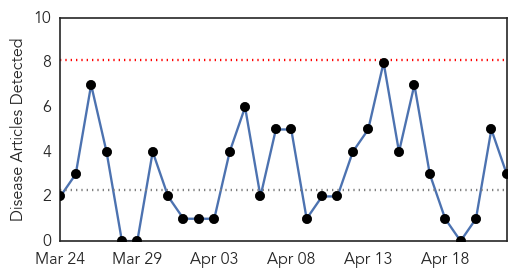
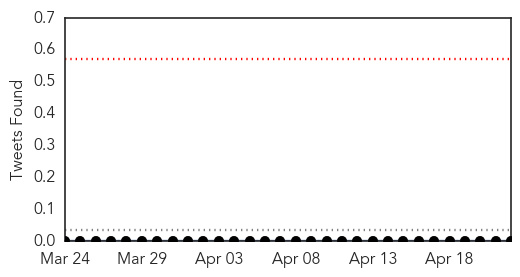

Hepatitis
30-Day Web Trend
0 alerts, 0 warnings

30-Day Twitter Trend
0 alerts, 0 warnings

Article Locations

Article Confidences

Top Articles:
Top Tweets:
-
No tweets found for Apr 22, 2015
Influenza
30-Day Web Trend
1 alerts, 0 warnings

30-Day Twitter Trend
0 alerts, 0 warnings

Article Locations
Article Confidences
Top Articles:
- 0.992
- U.S. Poultry Seen Facing Largest Bird Flu Outbreak Since ’83
- 0.986
- Bird flu spreads in US, but risk to people 'low'
- 0.962
- The HPAI Poultry Vaccine Dilemma
- 0.961
- dog park
- 0.960
- Running with the herd
- 0.946
- Warmer weather should arrest bird flu for now, U.S. officials say
- 0.946
- U.S. chickens face worst bird flu in decades; humans seen as safe
- 0.943
- Flu vaccine is available
- 0.939
- Iowa Farm To Kill 5 Million Chickens In Effort To Contain Avian Flu
- 0.898
- Dog Flu: Your Questions Answered
- 0.872
- Dog flu 'just a matter of time' in Minnesota
- 0.844
- Over 150 ill as flu grips Kalikot village
- 0.834
- CDC researching human bird flu vaccine just in case
- 0.808
- For flu shot compliance, stick beats carrot
- 0.793
- Bird Flu Takes Big Toll Yet as Virus Hits U.S. Chicken Farms — Naharnet
- 0.768
- Iowa hunters asked to watch for bird flu in wild turkeys
- 0.751
- April 21, 2015 Archives
- 0.751
- April 21, 2015 Archives
- 0.751
- April 21, 2015 Archives
- 0.751
- April 21, 2015 Archives
- 0.751
- April 21, 2015 Archives
- 0.743
- WHO: Unvaccinated Children Dying From Preventable Diseases
- 0.703
- Unvaccinated Children Dying From Preventable Diseases
- 0.682
- Gov't working on Avian Influenza vaccine
- 0.679
- Mexico bans poultry, egg imports from bird flu-hit Iowa
- 0.655
- Officials hope largest U.S. outbreak is Iowa's last
- 0.602
- Avian Flu Outbreak Push Iowa Farm to Kill 5 Million Chickens
- 0.573
- 7 News Belize
- 0.538
- Mexico bans poultry, egg imports from bird flu-hit Iowa
- 0.527
- DNR offers guidance for cleaning wild turkeys
- 0.508
- Nebraska chicken farmers hope bird flu risk on the decline
- 0.501
- Avian flu crisis grows for poultry producers throughout USA
Top Tweets:
-
No tweets found for Apr 22, 2015